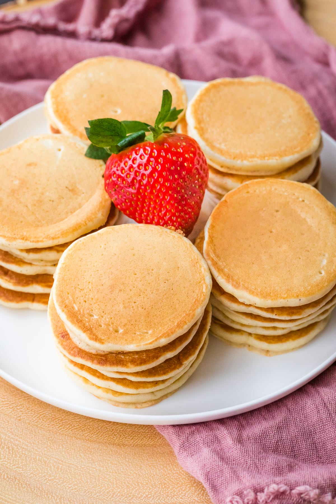

Mini Pancakes

Ingredients
- 1 cup of all purpose flour
- 2 tablespoons superfine (castor) sugar
- 2 1/2 Teaspoon baking powder (Not baking soda)
- pinch of salt
- 2/3 cup of milk
- 1 large egg
- 2 tablespoon (30g) melted unsalted butter
- extra butter for cooking
Insturctions
- Step 1 To make the batter, in a bowl whisk together flour, sugar, baking powder, and salt.
- Step 2 In another bowl or jug whisk together milk, egg and melted butter
- Step 3 Whisk milk/egg mixture into dry ingredient until just combined. You may need to add a little more milk if the batter is too thick
- Step 4 Heat a non-stick skillet or griddle pan over medium low heat. Grease with a little butter
- Step 5 Drop a small amount of batter (2-3 teaspoon)from a spoon onto the heated pan. Mini pancake should no larger than 2 inches/5 cm
- Step 6 Cook for about 45 second or until a few bubbles form and pop on the surface. Flip and cook the other side until golden brown about the same as the first side. Transfer to a plate and keep warm until all the batter is cooked.
Orginal Recipe at https://www.marcellinaincucina.com/quick-easy-pancakes/